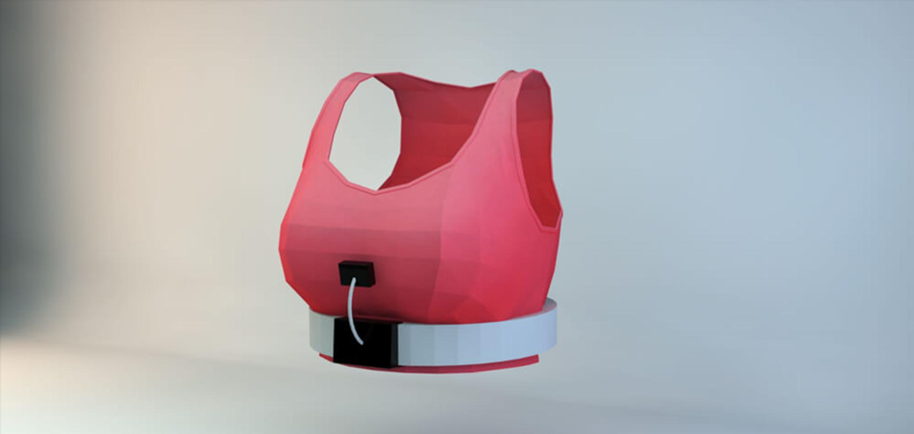
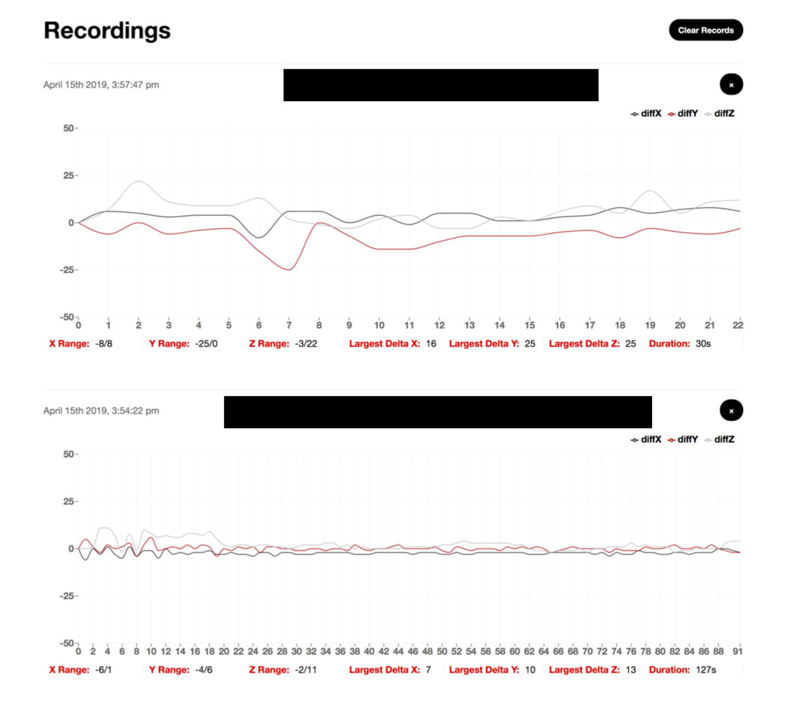
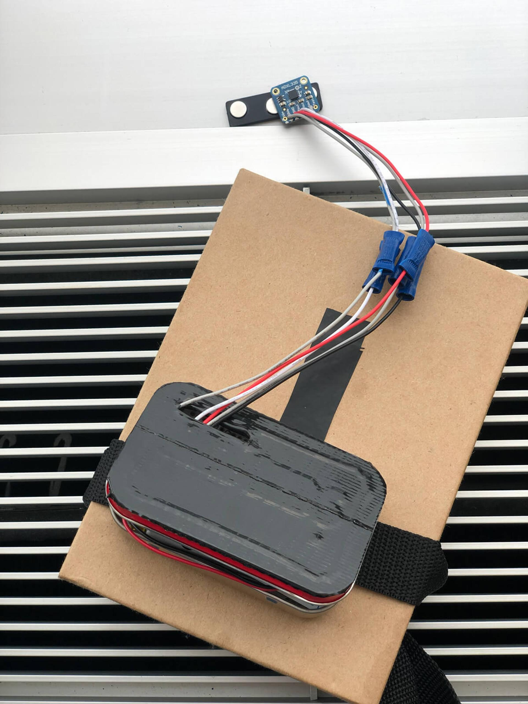
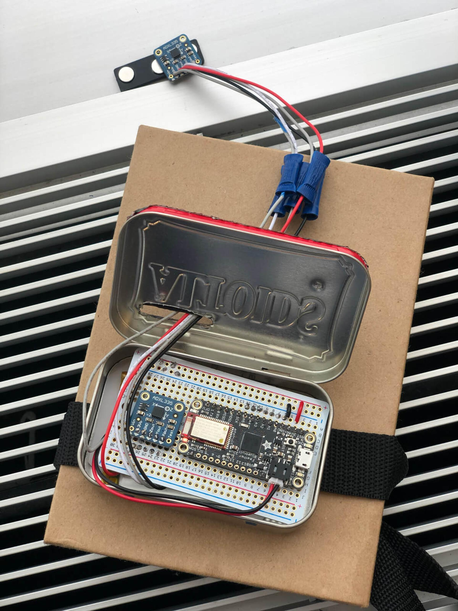

Target
Bra Telemetry

After hearing that bras were being designed by interviewing women asking about their fit, I proposed that we bring telemetry into the mix.
We added an array of wireless telemetry to the outside of bras being tested, which painted a much clearer picture of the bra’s fit. The sensors communicated to a browser-based client with low-energy Bluetooth.
We also learned that Altoid tins make for poor containers of radio equipment & that cloth/plastic are a better option.

Prototype (closed)
Prototype (open)
Sample measurements